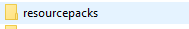

but Where to save it
Here open this and paste it then open minecraft go to options and then resource pack and select worst texture pack ever 0.1. it will restart the game but just open a world and see weird stuff (it will recieve updates so to stay updated always check our website and it is for 1.16)